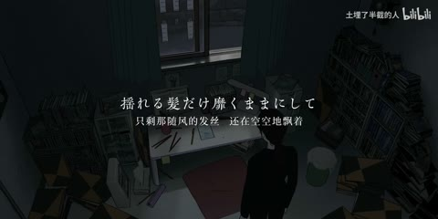

H43 / 57—84秒
Emotional numbness【情绪解离】【静止系mad】【风华回战2025】
树枝前景虚化、红色人物，竖窗显示街道/书房；头部、持纸手、脸、窗边人物和脚步接连替换。
迁移提问：去掉人物后，几何元素还剩什么功能？加回人物后，哪一层负责引导视线？
手法专题 / 规则、用途与取舍
决定什么值得看、什么退到感受层；清晰与模糊、占满与留空之间的关系塑造语气。
回忆、亲密、孤独、人物介绍、信息减负、画面间的呼吸。
模糊所有层；细字落在高亮区域；浅色误认为高级；没有清楚的主焦点。
①圈定焦点；②把无关层降低对比或虚化；③用前后景而非整屏滤镜；④检查脸和正文清晰；⑤给留白明确用途。
简单模糊易；可信景深、发丝边缘与原摄影需合适素材。
基础机制已做13项原创演示，不等于本页所有复杂组合均已成片验证。
原机制演示 →H43 / 57—84秒
树枝前景虚化、红色人物，竖窗显示街道/书房；头部、持纸手、脸、窗边人物和脚步接连替换。
迁移提问：去掉人物后，几何元素还剩什么功能？加回人物后，哪一层负责引导视线？


H25 / 0—7.667秒
开头黑底中央为小号白色中文短句，0–1秒同一句，1.333秒换下一句，3.000秒再次换句，4.333秒变成长行，7.333秒已进入人群实拍。没有在所查开头采样中确认复杂文字粒子或描边弹跳。
迁移提问：两个镜头为什么必须相邻？是共享意象、动作阶段、色彩，还是只是都很好看？

H41 / 9—24秒
9秒模糊漫画，12秒两人车厢；15/18秒留白中央小字、编号及纤细装饰线，21秒侧脸、24秒竖幅人物。
迁移提问：前景、中景、背景分别是什么？如果镜头移动，原图未画出的部分由谁补齐？

AI28 / 0—5.4秒
极小人物面对巨大圆门和长柱列，暖色门缘对冷灰环境；2.867转白色瀑布墙，人物仍作为比例参照。
迁移提问：画面里有什么告诉观众“它有多大”？哪些地方值得停留，哪些重复景观可以删掉？
同一张图做“亲密”和“疏离”两版，只改主体比例、清晰区域和负空间。
交付时保留基础版与加效果版，并写“增加了什么意义、损失了什么清晰度”。
使用观察与复盘表 →